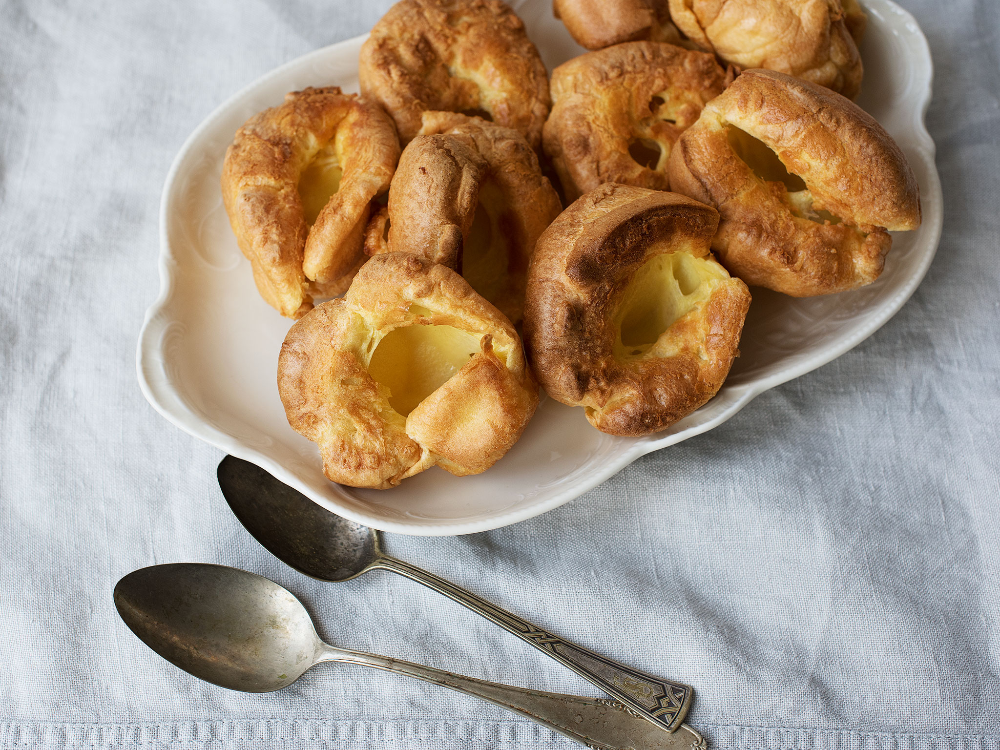

Yorkshire pudding is a common English side dish, it is a versatile food that can be served in numerous ways depending on its ingredients, size, and the accompanying components of the meal.
National Yorkshire Pudding Day has been celebrated on the first Sunday in February in Britain since 2007.
It is celebrated on 13 October in the United States
Step:
Preheat oven to 190°C
Step:
In a medium bowl, beat eggs with milk. Stir in flour. Set aside.
Step:
Divide butter evenly into the twelve cups of a muffin tin, about 1/2 tablespoon per cup. Place tin in oven to melt butter, 2 to 5 minutes. Remove tin from oven, and distribute batter evenly among buttery cups.
Step:
Bake in preheated oven 5 minutes. Reduce heat to 175°C, and bake 25 minutes more until puffed and golden.